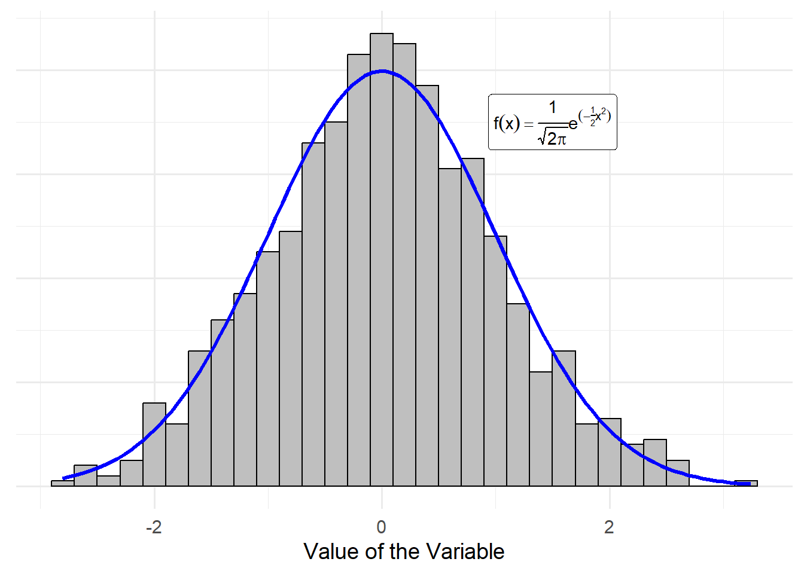

3 Essential Probability
The discipline of Statistics uses data to make inference on a population. In turn, statistical theory is built on probability — the discipline of mathematics that studies and models random processes. While we do not need to be experts in probability to be practitioners of statistical methodology, a foundation in models from probability is helpful for seeing common threads in statistical modeling. This chapter provides a brief introduction to the most relevant aspects of probability theory necessary for engaging with the remainder of the text.
3.1 Density Functions as Models
Any process for which the outcome cannot be predicted with certainty is a random process. Typically, probability is taught from a mathematical perspective, with a goal of constructing a coherent and complete framework for characterizing such random processes. Here, our goal is to introduce key probability concepts by relating them to their data-centric analogues. That is, we want to think of probability in light of how we will use it in statistical analysis.
Each time we collect data, we can think of each observation as the result of a random process. These observations are recorded as variables in our dataset. In probability, a random variable is used to represent a measurement that results from a random process. Just as we have both quantitative and qualitative variables, there are continuous and discrete random variables.
Definition 3.1 (Random Variable) A random variable represents a measurement that will be collected and for which the value cannot be predicted with certainty; they are generally represented with a capital letter. Continuous random variables represent quantitative measurements while discrete random variables represent qualitative measurements.
Consider measuring a single variable on a sample of \(n\) participants. Then, we might represent the measurements we will obtain as \(X_1, X_2, \dots, X_n\).
Note
There are many ways to interpret probability. In classical (“frequentist”) statistics, we think of probability as the likelihood of an event over repeated experimentation. Therefore, probability does not describe events that have already occurred; we can only describe the likelihood of future events.
Each of our random variables \(X_1, X_2, \dotsc, X_n\) will be observations from some underlying population. As we described in previous chapters, the distribution of the population is unknown. However, we might posit a model for this distribution. This is our primary use of probability theory in statistics — to model distributions. The most common way to represent a probability model is through its density function.
Definition 3.2 (Density Function) A density function \(f\) relates the potential values of a random variable \(X\) with the probability those values occur. For a continuous random variable, the probability the random variable \(X\) falls within an interval \((a, b)\) is given by
\[Pr(a \leq X \leq b) = \int_{a}^{b} f(x) dx.\]
For a discrete random variable, the probability the random variable \(X\) is equal to the value \(u\) is given by
\[Pr(X = u) = f(u).\]
Note
In a probability course, there is often a distinction made between probability density functions (continuous random variables) and probability mass functions (discrete random variables). We do not make this distinction and instead rely on the context to determine whether we are dealing with a continuous or discrete random variable.
With few exceptions, we will be working with continuous random variables. As a result, the density function is a smooth function over some region, and the actual value of the function is not interpretable; instead, we obtain probabilities by computing the area under the curve. Again, drawing connections to data analysis, we can think of a density function as a mathematical formula representing a smooth histogram. The area under the curve for any region gives the proportion of the population which has a value in that region. That is, we get the probability that a random variable will be in an interval by integrating the density function over that interval. Figure 3.1 illustrates this idea; we have a hypothetical dataset that has been summarized using a histogram; we overlay a density function (with the corresponding mathematical model that describes this density function). The figure shows how the sample (summarized in the histogram) is approximating the population (the density function).
Especially for visualization, the density function is the most common way of characterizing a probability model. However, computing the probability using the density is problematic due to the integration required. Many software programs address this by working with the cumulative distribution function (CDF).
Definition 3.3 (Cumulative Distribution Function (CDF)) Let \(X\) be a random variable; the cumulative distribution function (CDF) is defined as
\[F(u) = Pr(X \leq u).\]
For a continuous random variable, we have that
\[F(u) = \int_{-\infty}^{u} f(x) dx\]
implying that the density function is the derivative of the CDF. For a discrete random variable
\[F(u) = \sum_{x \leq u} f(x).\]
Working with the CDF improves computation because it avoids the need to integrate each time; instead, the integral is computed once (and stored internally in the computer) and we use the result to compute probabilities directly.
Big Idea
Density functions are the mathematical models for distributions; they link values of the variable with the likelihood of occurrence. However, for computational reasons, we often work with the cumulative distribution function which provides the probability a random variable is less than or equal to a value.
3.2 Summarizing Distributions (Parameters)
Most scientific questions are focused on the location or spread of a distribution. For example, we are interested in estimating the average yield of a crop, or the variance in the amount of sleep among college students. Introductory statistics introduces summaries of location and spread within the sample (e.g., sample mean for location and sample variance for spread). Analogous summaries exist for density functions.
In particular, the mean of a random variable (denoted by \(E(X)\)) and the variance of a random variable (denoted by \(Var(X)\)) are measures of the location and spread, respectively, of the distribution represented by its corresponding density function. When the density function is a model for the population, these represent the parameters of the population — the same parameters we estimate and make inference on using our data analysis. For completeness, we present the computational formulas for the mean and variance of a random variable, but we do not make use of these formulas moving forward. Instead, we simply note that these formulas are similar to their sample counterparts.
Definition 3.4 (Mean and Variance of a Random Variable) Suppose \(X\) is a random variable with density function \(f\). If \(X\) is a continuous random variable, then the mean and variance are given by
\[ \begin{aligned} E(X) &= \int x f(x) dx \\ Var(X) &= \int \left(x - E(X)\right)^2 f(x) dx. \end{aligned} \]
If \(X\) is a discrete random variable, then the mean and variance are given by
\[ \begin{aligned} E(X) &= \sum x f(x) \\ Var(X) &= \sum \left(x - E(X)\right)^2 f(x). \end{aligned} \]
As we have stated, the distribution of the population is generally unknown. If we were able to fully specify the density function for the population, then there would be no need for statistical analysis. Instead, the model is generally posited up to some unknown values (parameters). For example, a researcher might posit that within the population, the time until a medical device fails could be modeled using the density
\[f(x) = \frac{1}{\mu} e^{-\frac{x}{\mu}} \qquad x > 0.\]
Here, the researcher has really posited a form of the model, but not the exact model as \(\mu\) is unknown. The value \(\mu\) represents the average response (which could be confirmed using the formulas in the above definition). In such cases, making inference on the parameters allows us to characterize the distribution of the population.
Big Idea
When a probability model is specified for a population, it is generally specified up to some unknown parameter(s). Making inference on the unknown parameter(s) therefore characterizes the distribution — characterizes the manner in which the response varies across individuals in the population.
3.3 Specific Models for Populations
While we could posit any non-negative function as a model for a density function, there are some models that are very common. The most common model for the population of a continuous random variable is the Normal distribution.
Definition 3.5 (Normal (Gaussian) Distribution) Let \(X\) be a continuous random variable. \(X\) is said to have a Normal (or Gaussian) distribution if the density is given by
\[f(x) = \frac{1}{\sqrt{2 \pi \sigma^2}} e^{-\frac{1}{2\sigma^2} (x - \mu)^2} \qquad -\infty < x < \infty,\]
where \(\mu\) is any real number and \(\sigma^2 > 0\).
- \(E(X) = \mu\)
- \(Var(X) = \sigma^2\)
We write \(X \sim N\left(\mu, \sigma^2\right)\), which is read “X has a Normal distribution with mean \(\mu\) and variance \(\sigma^2\).” This short-hand implies the density above.
This model is a bell-shaped distribution centered at the mean \(\mu\). While this is a common model, it should not be assumed by default. In future chapters, we will consider methods for assessing whether assuming a Normal distribution is reasonable.
When a response is binary (assumes one of two values), it is a Bernoulli distribution. In order to make use of this distribution, we typically define one of the two possible outcomes as a “success” and the other as a “failure.” For example,
\[X = \begin{cases} 1 & \text{if a success is observed} \\ 0 & \text{if a success is not observed.} \end{cases}\]
Definition 3.6 (Bernoulli Distribution) Let \(X\) be a discrete random variable taking the value 0 or 1. \(X\) is said to have a Bernoulli distribution with density
\[f(x) = \theta^x (1 - \theta)^{1 - x} \qquad x \in \{0, 1\},\]
where \(0 < \theta < 1\) is the probability that \(X\) takes the value 1.
- \(E(X) = \theta\)
- \(Var(X) = \theta(1 - \theta)\)
We write \(X \sim Ber(\theta)\), which is read “X has a Bernoulli distribution with probability \(\theta\).”
Note
A generalization of the Bernoulli distribution is the Binomial distribution. So, we sometimes hear people refer to a Bernoulli distribution as “a Binomial distribution with a single event.”
3.4 Models for Sampling Distributions and Null Distributions
A statistical analysis does not exist in a vacuum. Instead, based on the context of the study, we make assumptions about the process which generated the data. The conditions we are willing to assume govern how we model the sampling distribution or null distribution. Occasionally, we can lean on statistical theory to say how the sampling distribution or null distribution will behave. That is, under certain conditions, statistical theory tells us what the appropriate model is. In these situations, there are some common models.
The t-distribution is a bell-shaped distribution, similar to the Normal distribution but with wider tails. It has a single parameter, known as the degrees of freedom. Note that unlike many other distributions, this parameter (the degrees of freedom) is not associated with the location of the distribution. Instead, the parameter governs the spread (but is not the variance).
Definition 3.7 (t-Distribution) Let \(X\) be a continuous random variable. \(X\) is said to have a t-distribution if the density is given by
\[f(x) = \frac{\Gamma \left(\frac{\nu+1}{2} \right)} {\sqrt{\nu\pi}\,\Gamma \left(\frac{\nu}{2} \right)} \left(1+\frac{x^2}{\nu} \right)^{-\frac{\nu+1}{2}} \qquad x > 0\]
where \(\nu > 0\) is the degrees of freedom.
We write \(X \sim t_{\nu}\), which is read “X has a t-distribution with \(\nu\) degrees of freedom.”
The Chi-Square distribution is a skewed distribution (looks like a giant slide). It has a single parameter, known as the degrees of freedom. The degrees of freedom for this distribution characterize both the location and spread simultaneously.
Definition 3.8 (Chi-Square Distribution) Let \(X\) be a continuous random variable. \(X\) is said to have a Chi-Square distribution if the density is given by
\[f(x) = \frac{1}{2^{\nu/2}\Gamma (\nu/2)}\;x^{\nu/2-1}e^{-x/2} \qquad x > 0,\]
where \(\nu > 0\) is the degrees of freedom.
We write \(X \sim \chi^2_{\nu}\), which is read “X has a Chi-Square distribution with \(\nu\) degrees of freedom.”
The F-distribution is a skewed distribution. It has two parameters, known as the numerator and denominator degrees of freedom. While neither variable is the mean or variance, together these two parameters characterize both the location and the spread.
Definition 3.9 (F-Distribution) Let \(X\) be a continuous random variable. \(X\) is said to have an F-distribution if the density is given by
\[f(x) = \frac{\Gamma((r + s)/2)}{(\Gamma(r/2) \Gamma(s/2))} (r/s)^{(r/2)} x^{(r/2 - 1)} (1 + (r/s) x)^{-(r + s)/2} \qquad x > 0,\]
where \(r,s > 0\) are the numerator and denominator degrees of freedom, respectively.
We write \(X \sim F_{r, s}\), which is read “X has an F-distribution with r numerator degrees of freedom and s denominator degrees of freedom.”
The formulas above are ugly, but we will not be working with them directly. Instead, statistical software has these distributions embedded. The key idea here is that when we know the model for a sampling distribution, we are able to rely on that model in order to obtain confidence intervals. And, when we have a model for the null distribution, we are able to rely on that model to obtain p-values. These models are behind default implementations of statistical methods in software.
Big Idea
Some probability models occur so frequently that we give them names for easy reference. Some models are common for modeling the population, in which case they are defined in terms of unknown parameters to be estimated. Some models are common for modeling sampling distributions or null distributions, in which case their form will be explicitly determined according to statistical theory.